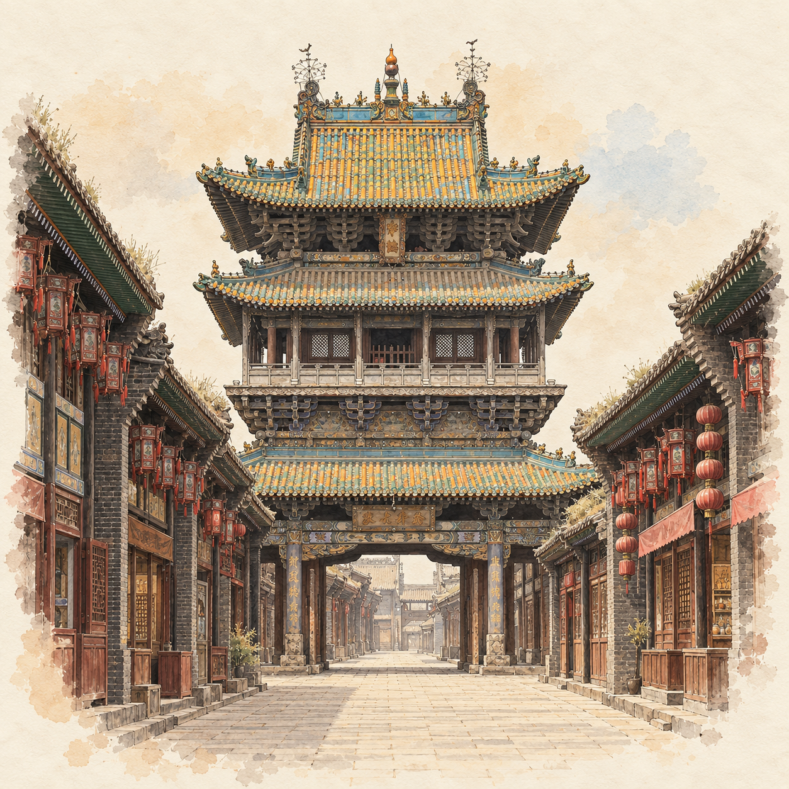
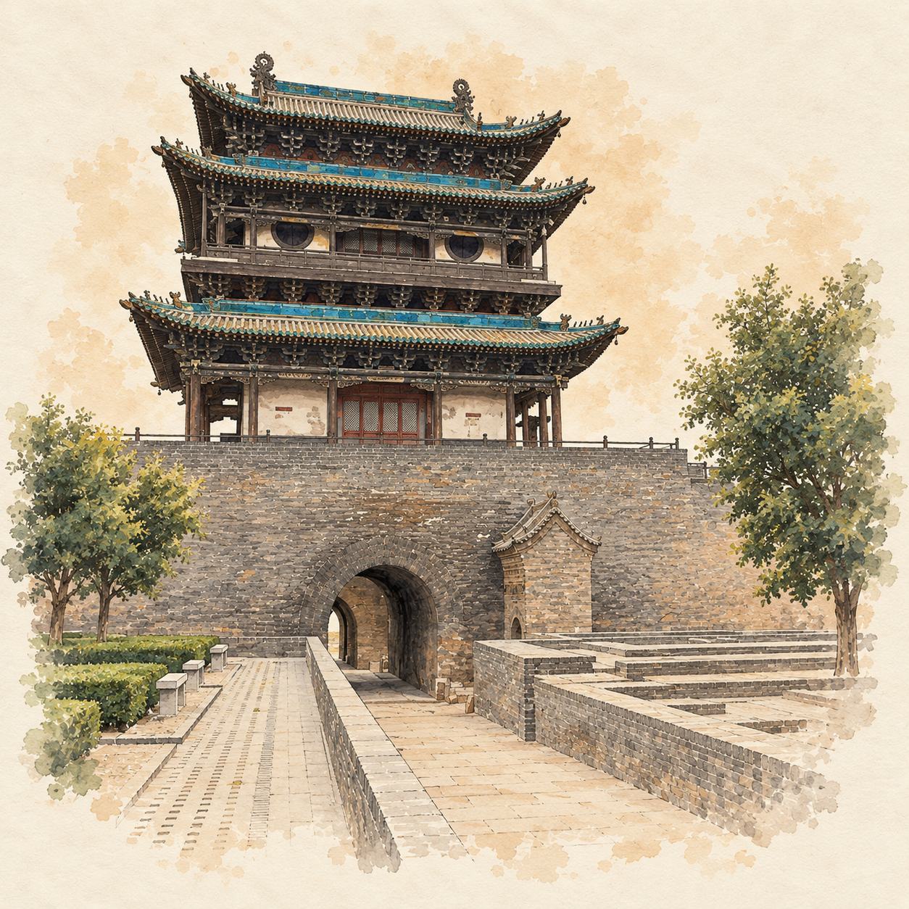
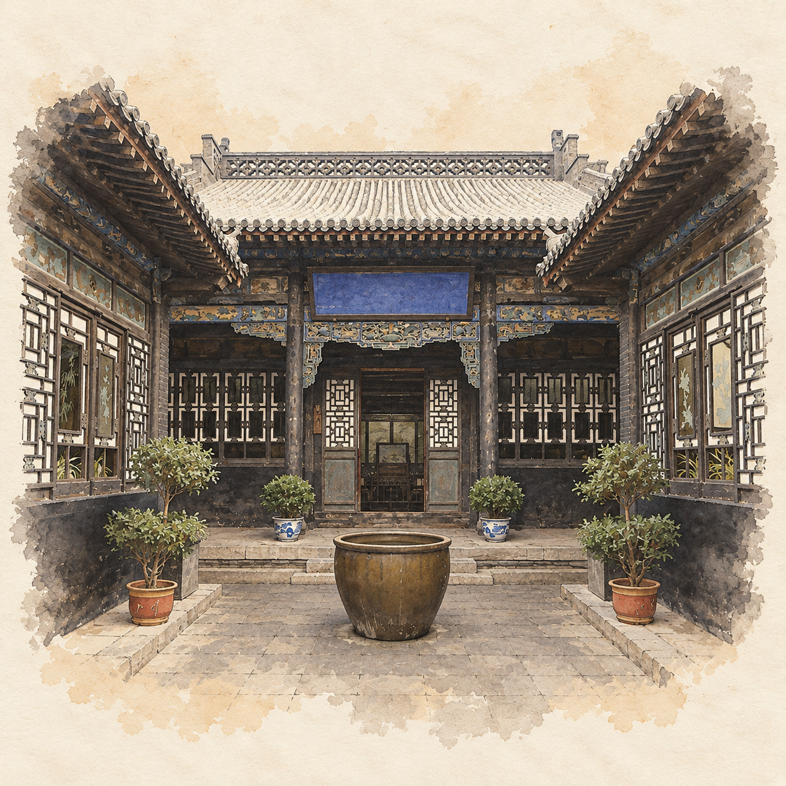
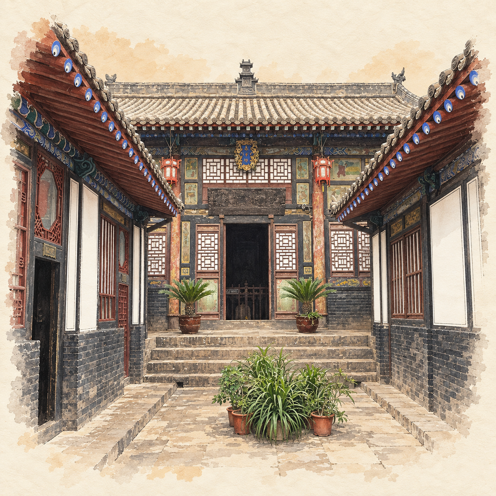
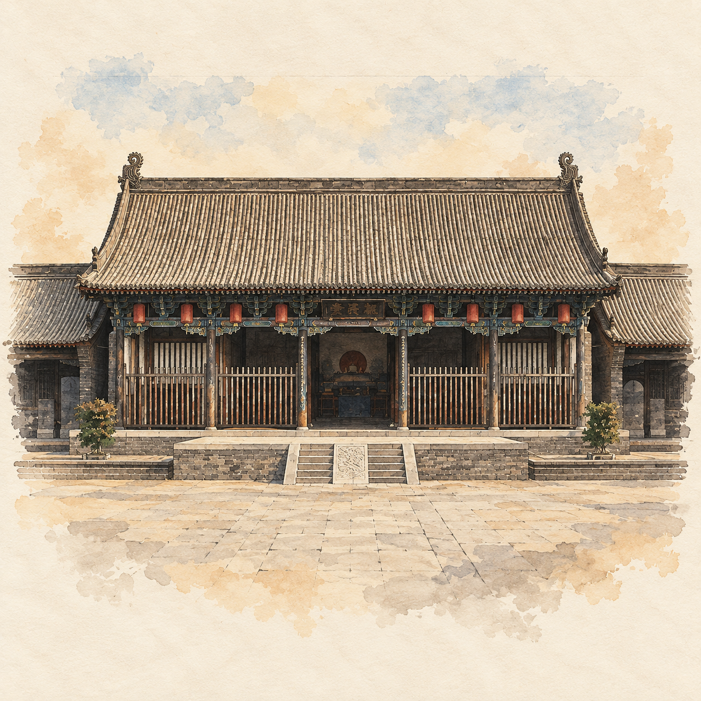
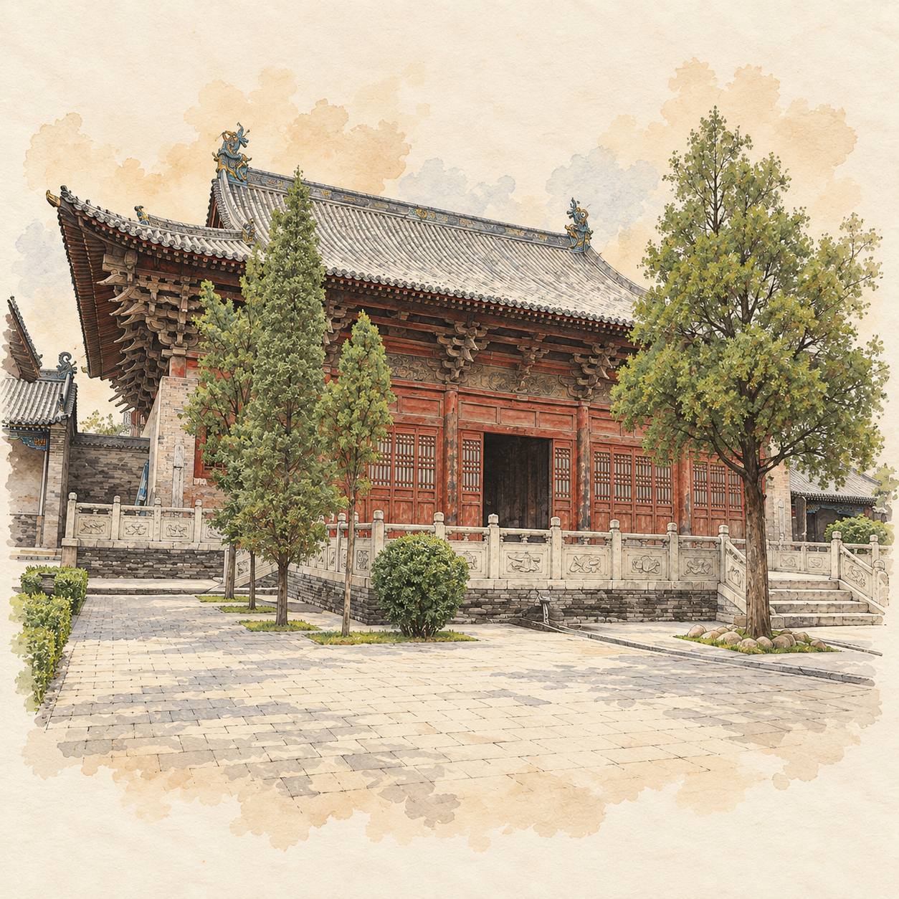

← My JourneySix-stop illustration references / 六站插画来源
Revised 29 October 2026 with built-in AI image generation. Each illustration uses one real photograph for the main view and the project's earlier artwork for the consistent ink-and-watercolour style. Major architectural forms were visually checked against photographs. People and temporary displays were removed; fine ornament and inscriptions remain stylised. These are educational illustrations, not photographs, measured reconstructions or evidence of historical appearance.
Photography credits and licences are retained below. The adapted illustrations are distributed under the corresponding licences indicated. Original photographs are linked rather than bundled here.

市楼 / Shilou
Reference R33: Zhangzhugang, 26 August 2013, south elevation. Original photo · CC BY-SA 3.0. Changes: AI watercolour interpretation, removal of visitors and umbrellas. Corrected three eave tiers, glazed tiles and open column-and-beam passage.

迎薰门 / Yingxun Gate
Reference GATE-008: Bairuilong. Original photo · CC BY-SA 4.0. Changes: AI watercolour interpretation, reduced visitors and clutter. Preserves three eave tiers, round openings and the photographed gate approach.

日昇昌 / Rishengchang
Reference RISHENGCHANG-005: Zhangzhugang, 25 August 2013. Original photo · CC BY-SA 3.0. Changes: AI watercolour interpretation, simplified displays and blank plaque. Depicts an interior courtyard, not the street entrance; removes the previously invented monumental red portal and abacus window.

同兴公镖局 / Tongxinggong
Reference ESCORT-007: lienyuan lee, 20 June 2016. Original photo · CC BY 3.0. Changes: AI watercolour interpretation and simplified exhibition text. Preserves the narrow courtyard and rear facade; removes invented wide training ground, weapons and distant fortress walls.

县衙 / County Yamen
Reference YAMEN-022: G41rn8, 2009. Original photo · CC BY-SA 4.0. Changes: AI watercolour interpretation, removal of tourist vehicle and flower displays. Shows the main hall and front verandah, without an invented foreground portal or side pavilion.

文庙大成殿 / Dacheng Hall
Reference TEMPLE-038: Zhangzhugang, 25 August 2013. Original photo · CC BY-SA 3.0. Changes: AI watercolour interpretation, removal of visitors, umbrellas and temporary decorations. Uses the photographed hall, brackets and terrace; removes the unsupported foreground arch, lions and incense burner.


.jpg){kind=link}